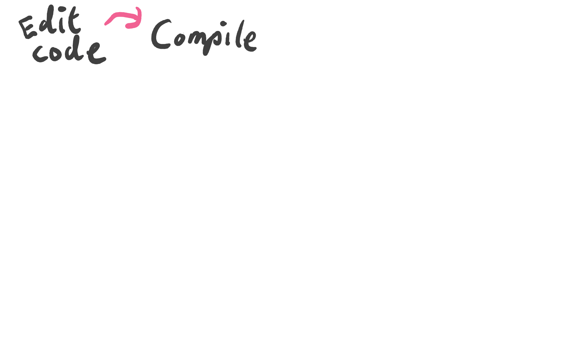
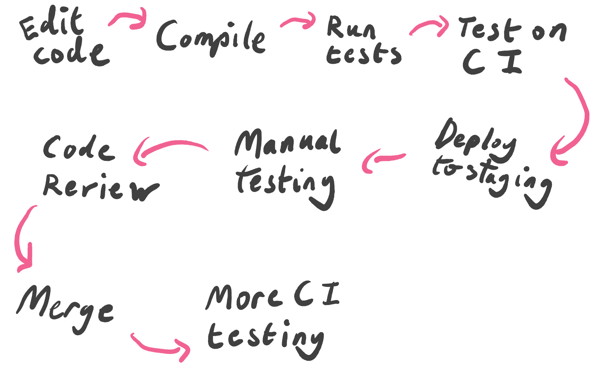

class: middle center slide-bold <img style="width: 65%" src="img/lucy-charcoal-3.svg"> --- class: middle,center ## Hi, I'm Louis! https://lpil.uk/talk-slides/code-mesh-2019 ??? Hello everyone! I'm Louis! Welcome to my Code Mesh talk! There's two other excellent talks happening right now so thank you very much for taking a chance with me. Hopefully everyone can see the slides OK, but just in case these slides can be found at this URL. I usually talk at Erlang events so I wasn't sure what kind of audience I'd attract today. If at any point what I'm saying doesn't make sense to you please wave your hand and I'll try again. Let's get started! --- class: slide-dark middle center <img style="width: 75%; padding-right: 45px" src="img/gleam-pink.svg"> ??? I'm here today to talk about Gleam, which is a new statically typed programming language for the Erlang virtual machine that I've been working on for the last 2 years or so. Gleam draws inspiration from both BEAM languages such as Elixir and Erlang, and ML languages such as Haskell and Elm. In this talk I'm going to take a look at these two sets of language and see why I think they're each special in their own way. After that we can take a look at this new language Gleam, and see how it attempts to bring together some of the best traits of both ML languages and BEAM languages. --- class: slide-bold middle center <img style="width: 45%; position: absolute; top: 5%; left: 27%" src="img/lucy-charcoal-6.svg"> <br> <br> <br> <br> <br> # Why Erlang? ??? One of Gleam's greatest strengths is that it compiles to Erlang and as such can take advantage of all the wonderful things that Erlang has to offer. So, what's so special about Erlang? --- class: middle <img class="color-adjust center-element" src="img/the-beam.png"> ??? A large part of the answer to that question is the BEAM, the Erlang virtual machine. Erlang is slightly unusual for a functional programming language in that it originated largely from industry rather than academia. Back in the 80s the telephony company Ericsson were looking for the ideal language for writing telephone switch firmware in, and from this Erlang was born. In order to meet the unusual requirements of the telephony environment Erlang and the BEAM developed some rather exciting features. --- class: middle ??? For a telephone switch to be useful it needs to be able to support multiple phone calls at the same time. If you had to wait for your neighbour to get off the phone before you could make a call I suspect telephones probably wouldn't have caught on. Because of this Erlang had to have great concurrency features, any program written in it needed to be able to trivially perform a great number of tasks at the same time. This was such an important feature they ended up naming the language after it. An Erlang is a unit of concurrency, it measures seconds per second. A telephone switch that can hold 100 simultaneous calls can support a load of 100 Erlangs. --- ## 2 million ejabberd connections ??? So how does the BEAM scale when it comes to concurrency? We can look at some benchmarks of real-world systems. ejabberd is a websocket based chat server, a fork of which powers WhatsApp, the popular chat app from Facebook. In their benchmarks the ejabberd team recorded 2 million active connections to a single server, which is quite a feat. https://blog.process-one.net/ejabberd-massive-scalability-1node-2-million-concurrent-users/ --- ## 2 million Phoenix connections <img class="center-element" style="max-width: 90%" src="img/phoenix.png"> ??? Phoenix Channels is a websocket based pubsub system with present features. In their benchmarks they also scaled to 2 million active connections on a single machine, and they found they could publish events to all of them in under a second. A common feature of both these benchmarks is that the limiting factor was reported as being not the BEAM itself, but the underlying network hardware and the Linux networking stack making it difficult to open and use 2 million TCP sockets. https://phoenixframework.org/blog/the-road-to-2-million-websocket-connections --- ## 20 million Erlang threads <br> <br> <img class="center-element" style="" src="img/ericsson.png"> ??? Lastly, in a more contrived benchmark the Erlang team at Ericsson tested to see how many threads they could create in a single program. On a computer with 16GB of RAM they found they could create 20 million threads without problem. On average it took 5 nano-seconds to create a thread, and 6 nano-seconds for any of these threads to respond to a message sent to it. https://groups.google.com/forum/#!original/comp.lang.functional/5kldn1QJ73c/T3py-yqmtzMJ --- class: middle ??? The BEAM can scale in this way, but it's not good enough to mearly be possible, it has to be relatively easy for the programmer. Asynchronous programming is notoriously difficult, especially if you're working with tools like locks, callbacks, and shared mutable state, so the creators of Erlang went down a different route. --- class: middle <img class="color-adjust center-element" style="" src="img/telephone-switches.png"> ??? Rather than having a small number of threads each handling a large number of concurrent tasks, in the Erlang world we use a great number of threads, but each thread only has 1 task to perform. In this way each thread, which in the Erlang world we call a Process, can be written entirely synchronously, dramatically simplifying the problem. If each process only has to do one thing it can be written in a sequential fashion. The programmer doesn't have to write any asynchronous code within the single process. To paraphrase the late Joe Armstrong, creator of Erlang, it's easier to have 2 million web servers handling 2 million sessions than it is to have 1 web server handling 2 million sessions. --- class: minimal-padding middle <img class="color-adjust center-element" style="" src="img/multi-threaded.png"> ??? To support concurrency this high Erlang processes are not implemented as operating systems threads, instead they are lightweight green threads with their own scheduler within the BEAM. Back in the late 80s computer processors only had a single core, so while Erlang programs were highly concurrent they were still single threaded. When processors with multiple cores started to appear the BEAM was upgraded to schedule Erlang processes across all available cores, making full use of all processing power available. Overnight all Erlang program became multi-core programs, and now writing a multi-core program in Erlang is no more difficult than any other program. --- ## Messages <br> <img class="color-adjust center-element" style="max-width: 90%" src="img/messages.png"> ??? Sadly the processes in these telephony switches couldn't be completely isolated from each other, there's always going to need to be some communication between threads in any program. Rather than using shared state communicate each Erlang processes by sending messages to each other asynchronously. What's more interesting is that processes within a telephone switch don't need to just talk to processes within the same switch, they also need to communicate with many other devices in the network as calls are routed through various bits hardware to get to their destination. Because of this need it is that it doesn't matter if the processes are running on the same instance of the BEAM, different instances of the BEAM on the same computer, or even two completely different computers connected by a network: The processes can still send messages to each other. Distributed computing is built into the BEAM, a typical BEAM program written in Erlang or Elixir can be turned into distributed program that runs on a cluster of networked computers with minimal effort. --- ## Garbage collection <img class="color-adjust center-element" src="img/garbage-collection.png"> ??? Ericsson didn't want their programmers to have to deal with the error prone business of manual memory management, so the BEAM implements garbage collection. This however posed a problem. Many runtimes will pause all computation in order to perform garbage collection, but here that's not an option. The switch can't let all calls hang for a second while it sorts out the memory, it needs to continue to operate continuously without interruption. So instead of performing garbage collection on the entire program the BEAM performs it on a per process basis. Rather than stopping everything only individual processes that are due a clean-up will be paused, giving Erlang programs predictable low-latency. --- ## Fault tolerance <img class="color-adjust center-element" src="img/isolation.png"> ??? And perhaps most excitingly, Erlang processes act as error bulkheads, meaning that when something does go wrong and your code crashes the problem is contained to the smallest possible sub-system and will not impact any other work being undertaken by the program. An Erlang program that takes advantage of this property can self heal by restarting the process and trying again, hopefully succeeding now that any corrupt state has been shed. In this way the BEAM is much like Kubernetes, the popular container orchestrator from Google. What makes the BEAM different from Kubernetes is that this state shedding can happen at a much more fine grained level- we won't lose the state of the entire program and all the requests being handled by it, instead just the single process that had the problem. --- ## Getting less niche ??? The BEAM was created with the problem of telephony in mind, but it turns out that what was once quite a niche set of problems is actually quite commonplace today. Concurrency, parallelism, distribution, low latency, and fault tolerance: these are characteristics we want in networked services today. The BEAM has almost by chance has become an excellent platform for building web applications, databases, message brokers, or many of these other things that web developers deal with on a daily basis. --- ## Why a new language? <br> ??? So now hopefully we So yes, the BEAM is wonderful piece of technology to work with, and I'm sure that you'll all understand why I wanted to use it with Gleam. However I've not answer the question of why make a new language at all- we already have several fantastic languages on the BEAM such as Erlang, Elixir, and LFE. Why spend all this time creating Gleam when we could use one of these? To answer this question I'd like to take a closer look at the BEAM's self healing properties and how that impacts us as developers and operators of software. --- class: minimal-padding middle <img class="color-adjust" src="img/cycle-1.png"> ??? It's a normal day at work and I've got a change to make to an application. Perhaps I'm adding a feature, maybe we're removing a bug, it doesn't matter, I'm making some sort of change. I spend some time editing the code, making my changes. --- class: minimal-padding middle  ??? Once satisfied run the compiler to build the application, which completes successfully, reporting no problems. --- class: minimal-padding middle <img class="color-adjust" src="img/cycle-3.png"> ??? After that I run the unit tests on my laptop to ensure I've not broken anything, and then push my changes to GitHub. --- class: minimal-padding middle <img class="color-adjust" src="img/cycle-4.png"> ??? Once uploaded the code triggers a build on the CI server. It runs all the unit and integration tests, and runs some linters such as Credo to spot any mistakes. --- class: minimal-padding middle <img class="color-adjust" src="img/cycle-5.png"> ??? If all those checks pass then it deploys the new application version to a staging environment. --- class: minimal-padding middle ??? On the staging environment I manually test the application and demo the new behaviour to stakeholders who give the green light to continue. --- class: minimal-padding middle <img class="color-adjust" src="img/cycle-7.png"> ??? Meanwhile, on GitHub the code is reviewed by some of the other programmers on my team, as they may have some context or insights that I do not. --- class: minimal-padding middle <img class="color-adjust" src="img/cycle-8.png"> ??? Happy with my changes they approve it and the code is merged into master, triggering another CI build. --- class: minimal-padding middle  ??? All the tests are run again to ensure no problems were introduced during the merge. --- class: minimal-padding middle ??? And lastly, once the tests have passed again the code is deployed to production, and released to our users. Satisfied with a job well done, I go for lunch. But then! Disaster strikes! Users are reporting that the application no longer works as intended. Right at the very beginning when I was editing the code I made a mistake and introduced a bug. Each one of these steps has failed to detect the problem and now the bug has snuck into production. Luckily the application is written in Erlang so the impact of the problem has been minimised, but I still need to fix the problem as a matter of urgency. --- class: center middle <img class="color-adjust" src="img/time.png"> ??? In this instance the problem was discovered just a few hours after I made the mistake, so the change is still fresh in my mind and it's not too difficult to correct it, but that's not always the case. Depending on the culture of the company I'm working at it might take days or weeks for a change to be deployed to production, or it might have taken longer for the users to discover the problem. Worse case scenario it has been months or years and the writer of the bug has long since left the company, leaving me to try and fix code I've never seen before. --- class: center middle <img class="color-adjust" src="img/science.png"> ??? The larger the gap between the mistake being made and the problem being detected the more difficult it will be to fix. Of course this isn't the only factor in the difficulty, but it is an important multiplier. Erlang gives us powerful tools to tolerate mistakes and debug them, but they largely only help us once the code is in production, and that time cost and loss of familiarity is far from optimal. --- class: minimal-padding middle center <img class="color-adjust" src="img/bug-detected.png"> ??? What I really want is to for problems to be detected here, immediately after the mistake was made. I want that feedback loop to be as fast as possible so we can spend less time doing exploratory work (such as debugging) and more time iterating (actually providing business value). --- class: minimal-padding center middle <img class="color-adjust" style="padding-bottom: 40px" src="img/ml-family.png"> ??? Gleam aims to provide that fast and safe feedback loop by introducing a type system inspired by those found in the ML family of languages. Why these languages? Because I believe they are currently the languages that do best at providing this rapid feedback loop. Let's look at some examples: --- ## Reason <img class="center-element" style="max-width: 60%" src="img/messenger.png"> > Messenger used to receive bugs reports on a daily basis; since the > introduction of Reason, there have been a total of 10 bugs (that's during > the whole year, not per week)! > Refactoring speed went from days to hours to dozens of minutes. <cite> https://reasonml.github.io/blog/2017/09/08/messenger-50-reason.html </cite> ??? Messenger is Facebook's web chat program. It has 1.3 billion monthly users. Back in 2016 they started converting the web client from Javascript to a dialect of OCaml called Reason. A year later 50% of their code was written in Reason and they had this to say: **QUOTE** Quite an impressive statement! --- ## Elm <img class="center-element" style="max-width: 70%" src="img/noredink.png"> > After 2 years and 200,000 lines of production Elm code, we got our first > production runtime exception. > In that period, our legacy JS code has crashed a mere 60,000 times. <cite> Richard Feldman - https://twitter.com/rtfeldman/status/961051166783213570 </cite> ??? NoRedInk are a company in the United States that provide education software. Back in 2016 they started adding Elm code to their Coffeescript web application with great success. In 2018 one of their engineers, Richard Feldman, posted this tweet: **QUOTE** This is not to say the engineers at NoRedInk and Facebook are without error, they make as many mistakes as you or I. The key takeaway here is that they are discovering and fixing their mistakes before they get to production, or at least the ones that cause runtime errors. --- ## Purescript <img class="center-element" style="max-width: 70%; padding-bottom: 40px" src="img/lumi.png"> > [I’ve had] such a positive experience, with little mental overhead, and > total trust in the compiler. I implemented an entire page with a list of > data, filters, search, and pagination which worked first time. <cite> Brandon Martin - https://www.lumi.dev/blog/purescript-and-haskell-at-lumi </cite> ??? Lumi is a company that provide custom eco-friendly branded packaging for online stores. In 2018 they started converting their Javascript frontend into a Purescript frontend. After a few months of Purescript in anger engineer Brandon Martin had this to say: **QUOTE** What I like about this is the feeling of trust in the compiler, that it is something that can be relied on. I want to create the experience in the BEAM ecosystem of the compiler being like a pair programming partner, there to help by catching mistakes and providing additional insight. How do they achieve this? Through static analysis. The compiler walks the code and keeps track of the type of every single function and value throughout the program and lets you know if your code has any potentially dangerous inconsistencies. It also informs the programmer precisely where the inconsistency can be found, and with this precise feedback the way we write code changes. --- <br> ```rust fn get_user_name(user) { let User(name: name) = user name } ``` <center><h3>⇩⇩⇩ becomes ⇩⇩⇩</h3><center> ```rust fn get_user_name(user) { let User(name: name) = user case name { "" -> Null _ -> Just(name) } } ``` ??? First the programmer makes an edit, informing the compiler of the change they wish to make. For example, perhaps a function has been changed to sometimes return a null value under certain circumstances. In languages like Erlang without this static analysis it is up to the programmer to now find all the the places in the codebase that need to be updated to correctly handle this new nullable value, possibly using a mix of already existing unit tests and their familiary with the codebase. --- <br> ??? In ML languages the compiler outputs a TODO list of inconsistencies, and the programmer just has to go through them one by one, fixing them one by one. No need for doing discovery work- just state the change to be made, and the compiler then shows you how to integrate that change. As I said before you can achieve the same with a robust set of unit tests, but I think this system has a few advantages. We don't have to write the tests, the compiler does this checking for us. This static analysis can be thought of as basic full test coverage for free. Secondly this static analysis is fast. A large codebase can be checked in seconds or fractions of a second, while the tests may take minutes. TODO maybe - walk through how the inference works - Kris makes an excellent argument about ADTs being how you write down your assumptions so they can be checked later. https://youtu.be/5AtyWgQ3vv0?t=844 --- class: slide-bold middle center <img style="width: 50%; position: absolute; top: 5%; left: 25%" src="img/lucy-charcoal-5.svg"> <br> <br> <br> <br> <br> ## Do we need fault tolerance? ??? It might seem like with this ML style error detection the BEAM's runtime fault tolerance is somewhat redunant, but I think they can complement each other quite nicely. The ML error detection means that we are aware of place where there can be a problem, and then we can make a decision about how we want to handle it. --- ## Programmer mistake ```rust fn main() { list.reverse("hello") // Error! Not a list } ``` ```rust fn main() { string.reverse("hello") // That's better :) } ``` ??? Imagine a problem caused by a mistake on my part as a programmer, say by trying to reverse a string using a function that reverses lists. In this case once the error has been highlighted I'm going to fix the bug. Erlang's fault tolerance wasn't needed here. If the programmer has made a mistake we want to find it, and we want to fix it. --- ## Incorrect user input ```rust fn handle(request) { let input = decode_json_body(request) save_record(input) // Error! JSON could be invalid } ``` ```rust fn handle(request) { let result = decode_json_body(request) case result { Ok(input) -> save_record(input) Error(reason) -> unprocessable_entity(reason) } } ``` ??? Another situation in which errors may arise if when dealing with user input. Take this request handler function with a web application; it decodes some data in JSON format, taken from the body of the request. The problem here is that the request body might not contain valid JSON, we can't rely on the correct input from the outside world. Here the most practical thing to do is to check whether the JSON is valid or not, and to instead return an error message to the user if they made a mistake. Erlang's fault tolerance wasn't needed here. If we can pass an error back up the chain to the origin of the problem then that's often the best thing to do. --- ## Background processing ```rust fn process_video(id) { let metadata = lookup_metadata(id) create_thumbnails(metadata) transcode_video(metadata) "done!" } ``` ??? I used to work at a start up that did video transcoding and we had a lot of jobs that ran in the background and didn't immediately have a user attached to them. We had jobs that looked like this: They performed a series of steps such as looking up metadata from the database, creating thumbnail images, and transcoding video into some other format. Each one of these steps is expected to always succeed according to our business logic, but because of the nature of the universe there is very real chance these things could fail. A fault hard drive could corrupt a video file, or the unreliable network could cause a database lookup to fail. --- ## Defensive programming ```rust fn process_video(id) { case lookup_metadata(id) { Ok(metadata) -> case create_thumbnails(metadata) { Ok(result) -> case transcode_video(metadata) { Ok(_) -> "done!" Error(transcoder_error) -> ??? } Error(transcoder_error) -> ??? } Error(database_error) -> ??? } } ``` ??? The ML style error detection forces the programmer to acknowledge these potential problems, and we end up this verbose nested code. After each step the programmer has to check to see whether if failed, and then do *something* with the error if it did. --- ## Defensive programming ```rust fn process_video(id) { let result = id |> lookup_metadata |> result.then(fn(metadata) { let actions = [create_thumbnails, transcode_video] list.traverse(actions, fn(fun) { fun(metadata) }) }) case result { Ok(_) -> "done!" Error(e) -> ??? // What do we do with the error? } } ``` ??? It's possible to rewrite the the function using some higher order functions that extract some of the conditional logic. This removes some of the nesting but now the reader needs to be familiar with all of the extra functions used to understand the code, and the code is still much more complicated than what we started with. To make matters worse it's not even clear what we should do with the error once we have it. There's no user to return it to. Perhaps we need to create some kind of error logging system. At this point I suspect that any Erlang people in the audience are itching to jump up and shout there is another way to approach this. --- ## Offensive programming ```rust fn process_video(id) { assert Ok(metadata) = lookup_metadata(id) assert Ok(_) = create_thumbnails(metadata) assert Ok(_) = transcode_video(metadata) "done!" } ``` ??? Offensive programming. If your business logic says that something should never fail, and you have no way of handling the failure, don't check for the error. Instead make an assertion saying "in order to continue no error must happened". If there was an error we crash process, because the process doesn't have the ability to handle the problem, it doesn't have enough context. And now the BEAM's fault tolerant properties come into play- the crash is logged and reported, and the process can be restarted as required. The rest of the program continues running without problem. As the Erlang saying goes, let it crash. --- class: slide-bold middle center # Let it crash! ### (if you're sure) ??? The ML style type system helps us find all places where failure can happen, and then we can categorised them into two different groups. The errors that are expected within our domain, such as invalid user input, which we deal with locally with conditional logic. The errors which are exceptional and outside out domain, such as data corruption, can be handled non-locally using processes and the BEAM. If an error is truely unexpected it shouldn't get in the way of your business logic, and you shouldn't have to write extra code for your program to tolerate it. --- class: slide-bold middle <br> <br> <br> <br> <br> # What's next for Gleam? ??? TODO - Gleam is new but ready for people to try - time to build community - make the experience of trying Gleam as welcoming and enjoyable as possible - code of conduct ??? Gleam's a new language and there's many things still to come, so what's coming up next? --- ## Editor integration ??? Productivity is a core value for Gleam, and having good development tooling is important for productivity. We want the experience of writing Gleam code to be as slick and enjoyable as possible, no matter what the editor the programmer is using. To achieve this Gleam will implement Microsoft's Language Server Protocol. Once implemented users of vim, emacs, atom, vs code and more will be able to do the following: - Display type errors in editor after every keystroke - Provide code completion options for variables, modules, functions - Show documentation and type information in the editor - jump to the definition of functions and types - Perform language aware renaming of variables, functions, and more with a single command - format code automatically when saving a file, like with exfmt And what's more thanks to Gleam's type system and static analysis this tooling will be able to provide much richer information to the programmer than is possible with other BEAM languages. --- ## Documentation <img class="center-element" alt="documentation" style="" src="img/documentation.png"> ??? Another part of the developer experience puzzle is documentation. I don't know if anyone here has written a program in Gleam but right now it's not as easy as it ought to be. Unless you want to read the source code of any libraries you're using there's no way to learn what modules and functions are available. --- class: splash-image <img src="img/hexdocs.png"> ??? Meanwhile Elixir has the beautiful, searchable, mobile friendly documentation generated from the code itself by the ex_doc tool, hosted on the hexdocs website and linked directly to the hex package itself. In Elixir it's easy to find the documentation you need, whether it's online, in your editor, or on the command line, and we intend for this to be the case for Gleam too. Currently looking at whether we could use Elixir's ex_doc for Gleam. --- class: center ## Exercism <img class="center-element" style="max-width: 70%" src="img/exercism.png"> https://exercism.io ??? Who's familiar with Exercism? Exercism is a fantastic place for people to learn new programming languages and to practice their coding skills. --- class: middle <img class="center-element" src="img/exercism-learn.png"> ??? How does it work? A programmer picks a language they want to practice and Exercism gives them an exercise to complete. Each exercise has instructions, some skeleton code to fill in, and a full set of unit tests to make pass. --- class: middle <img class="center-element" style="padding-top: 69px" src="img/exercism-chat.png"> ??? Once the programmer has completed their solution they can to submit it back to Exercism, where they get getting friendly and constructive feedback from track mentors and other students. They can also view solutions from other people and learn different approaches to the same problem. --- class: center ## 51 Languages and counting ??? Exercism currently has 51 live languages tracks and has given the thumbs up for a Gleam track. The exercises need to be ported to Gleam and documentation needs to be written, but once done we'll have a top notch experience for learning and practicing Gleam. Exercism is community run, open source, and very well organised so if you're interested in contributing to Gleam this could be a great place to create help out. --- ## Typed OTP ```rust pub struct Spec(arg, state, call, reply, cast) { init: fn(arg) -> Init(state) handle_call: fn(call, state) -> Call(reply, state) handle_cast: fn(cast, state) -> Cast(state) handle_info: fn(Any, state) -> Cast(state) } pub external fn start_link(Spec(a, b, c, d, e)) -> Result(GenServer(b, c, d, e), InitError) = "gleam_gen_server" "start_link" ``` ??? One question that is frequently asked is how does Gleam type processes and OTP. The short answer is that it doesn't. Gleam doesn't currently have any special first class support for processes or OTP, instead these Erlang features are to be used via the Erlang FFI. Today we have some simple bindings to `gen_server` that allow us to define and use them in a type safe way, but we lack type safe bindings to other behaviours such as supervisor. The challenge here is how to write bindings that are reasonably safe but flexible enough to support common Erlang patterns used today. In future we could add some new features to Gleam that make it possible to create better support for processes, but if we do I want these language extensions to be generically useful rather than specific to processes. Any new language extensions should be applicable to a wide variety of problems and make the language more powerful as a whole. --- class: middle, slide-bold <img style="width: calc(100% - 580px); position: absolute; right: 30px; bottom: 10px" src="img/lucy-charcoal.svg"> <img style="width: 300px; margin: -110px -20px" src="img/gleam-charcoal.svg"> - https://gleam.run - https://github.com/gleam-lang/gleam - IRC `#gleam-lang` on Freenode ### Griffics' art - https://www.griffics.com/ ### Call me? - twitter @louispilfold ??? That's all I've got to share today. If any of this sounds interesting to you please do check out and website and always feel free to message me on IRC, GitHub or Twitter with any questions you might have. Lastly I would like to say a huge thank you to Griffics for designing the beautiful Gleam logo and Lucy the star. Go checkout his website, it's full of lots of really fun and playful artwork. Thank you very much for listening.